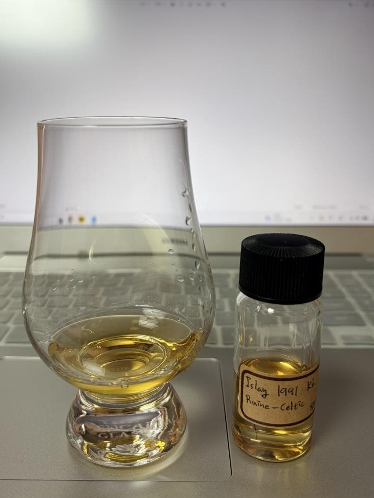

Islay Single Malt Scotch Whisky 1991 Kb
주종 - Single Malt Scotch Whisky
증류소 - Unknown
병입자 - Kingsbury
도수 - 50.5%
숙성년수 - 26Y
캐스크 - Sherry Butt
기타 정보 - Ruine - Celtic Series, Bruichladdich라는 풍문이 돈
N - 청사과, 매실, 바닐라, 해초류, 페놀, 밀키, 시리얼, 우디, 건초, 넛맥, 파인애플, 우유식빵, 재
잔에 따르면서도 풍겨오는 물기어린 청사과와 싱그러운 초록색 매실의 싱그러움들과 그것들의 에스테리함
향을 깊게 들이마시면 느껴지는 바닐라와 곧이어 해초류와 아이오딘, 약품류의 페놀릭함이 바닐라 내음과 함께 느껴진다
앞선 향조들은 곧바로 뒤로 빠지며 약간의 밀키한 뉘앙스를 가진 시리얼류의 고소함이 앞으로 나온다
건초, 건조한 우디함과 넛맥과 같은 스파이스들이 느껴지며
산미있는 파인애플이 앞전의 에스테리한 과실들과 함께 생기를 불어넣어 준다
시간을 조금 주자 바닐라의 뉘앙스가 아주 진해지며 밀키함도 한층 더 존재감이 뚜렷해져 우유식빵을 연상하게 된다
중간중간 피트감에 하얀 재의 뉘앙스가 존재감은 크지 않지만 조미료 역할을 톡톡히 해낸다
P - 스모키, 페놀, 해조류, 청사과, 매실, 알콜, 건초, 우디, 백도, 꿀, 사과, 망고, 넛맥, 시나몬, 밀키, 코코넛, 빵, 파인애플, 매실, 꿀
입안으로 들어오자마자 스모키함이 날숨으로 코끝에서 나오며 페놀릭함과 해조류의 뉘앙스가 지나친다
뒤이어 청사과의 매실의 싱그러움, 에스테리함, 달콤함이 입안에 퍼지며 혀를 살짝 조이는 알콜감이 살짝 느껴진다
건초, 건조한 우디함이 복숭아 중 딱딱한 백도의 풍미와 꿀과 뒤섞이며
망고, 리치와 같은 열대과일의 달콤함이 싱그러움을 가진채 있고 중간중간 넛맥과 시나몬의 터치도 있다
뒤따라 은근하게 느껴지는 밀키함이 있다
입안에서 굴리자 우유, 코코넛과 같은 밀키함이 아주 강해지며 몰티함과 합쳐져 우유에 만 빵이나 굉장히 버터리한 식사빵이 연상된다
파인애플과 초록매실의 산미와 싱그러움도 드문드문 느껴진다
F - 백도, 망고, 크래커, 밀키, 코코넛, 건초, 넛맥, 바닐라
백도와 망고, 리치와 같은 열대과일이 목넘김 직후에 남아있으며
고소하고 달콤한 크래커과자의 풍미가 코끝을 강하게 채운다
밀키함과 코코넛의 풍미가 농축되서 앞의 단맛과 함께 남아 맴돌며 드라이한 건초와 넛맥과 같은 향신료가 남아있다
과일류의 단맛이 지나간 후 밀키함은 바닐라와 함께 은은하게 남아서 마무리된다
총점 - 89
한줄평 - 빵과 버터, 빵과 잼(과일), 빵과 치즈(치즈는 없음)